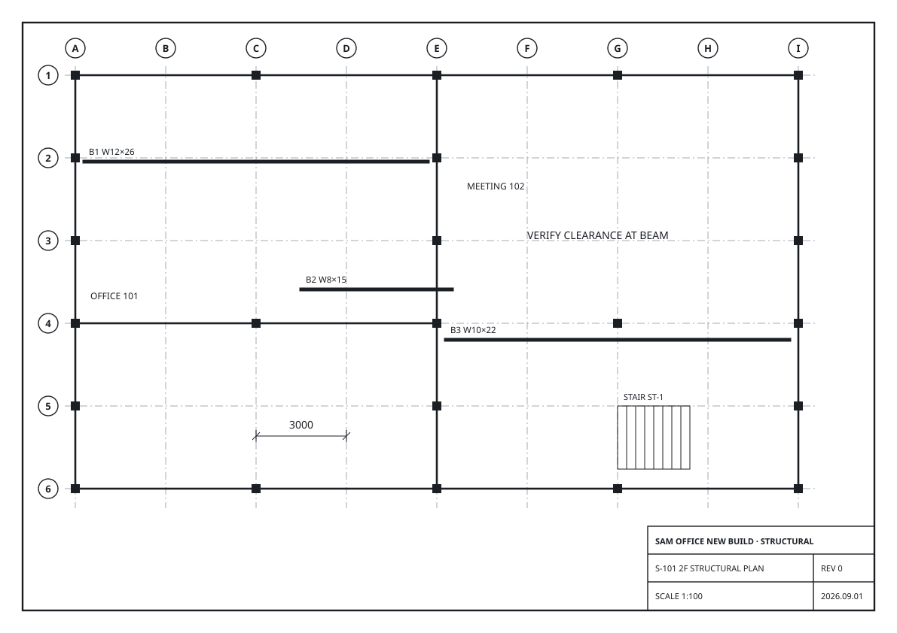
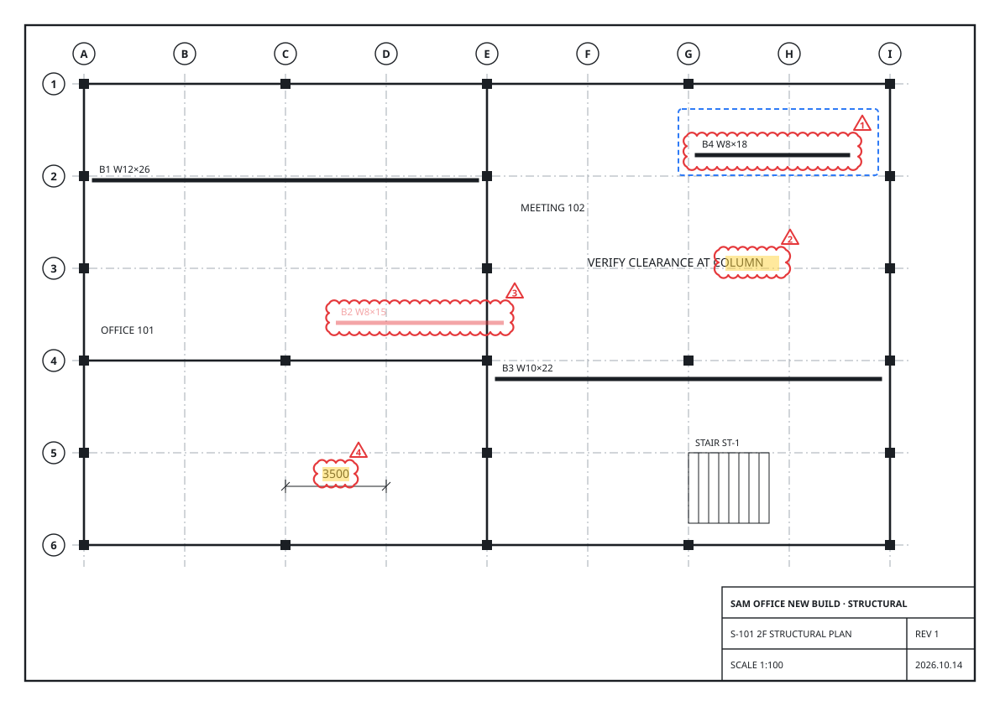

Sam Drawing Tools
S-101_Structural_Plan_rev1.pdf
Compare · S-101 rev0 ↔ rev1
Compared 2 min ago
Focus
F11
Home
Compare
Markup
Draw
View
Open
Swap
Files
Side by side
Overlay
Sync pan
View
Cloud
Highlight
△ Delta
Revision marks
Previous
Next
Reviewed
Review
Export PDF
List CSV
Output
△ numbering
Start 1
Each +1
Detect
Text → highlight
Ignore title block
Original
S-101_rev0.pdf
REV 0 · 2026-09-01

Revised
S-101_rev1.pdf
REV 1 · 2026-10-14

△1
Changes
4
· Reviewed 1 · Excluded 0
All
Text 2
Graphic 2
△
Type
Description
Grid
Match
Status
△1
Graphic
Beam B4 (W8×18) added
C-3
98%
Open
△2
Text
"BEAM" → "COLUMN"
F-3
100%
Reviewed
△3
Graphic
Beam B2 (W8×15) removed
B-3
96%
Open
△4
Text
Dimension 3000 → 3500
C-5
100%
Open
EXPORT
EXP
Export marked PDF
Ctrl+E
EXPORTCSV
EXC
Export change list (CSV)
EXCLUDE
X
Exclude selected change from export
EXIT
Close this comparison
↑↓ choose
Tab complete
Enter run
All commands: type ? or F1
Command:
N
NEXT Change △1 of 4 · Beam B4 (W8×18) added
Command:
RV
REVIEWED △2
Command:
EXP
Enter run · Esc cancel · F2 history
Compare · 4 changes on page 1
Sync pan on
Page 1 / 3
96%
EN